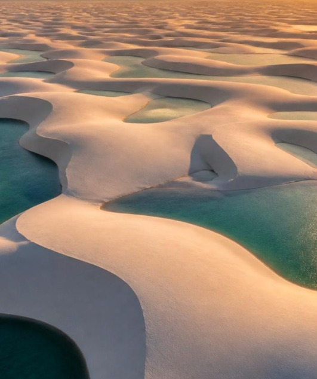

Guia do Maranhão
O Maranhão, um azulejo de cada vez.
Roteiros, cultura e comida contados por quem conhece o estado por dentro. Dos casarões de São Luís às lagoas dos Lençóis.

Roteiros, cultura e comida contados por quem conhece o estado por dentro. Dos casarões de São Luís às lagoas dos Lençóis.
